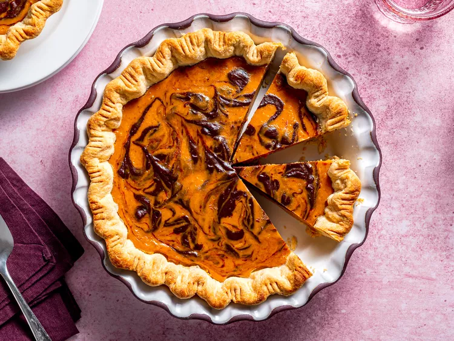

Pumpkin Pie

Marbled Chocolate Pumpkin Pie
Pumpkin pie is an all-time holiday dessert classic, but maybe it's time
for a glow up. For Thanksgiving this year, Allrecipes challenged 5 of our
favorite bakers to upgrade our basic pumpkin pie recipe. The rules? The
base ingredients needed to stay the same, and the bakers could only use
five additional ingredients for their upgrade. Check out the rest of the
pumpkin pie recipes from our challenge, here.
When it comes to holiday baking and I'm short on time or kitchen space,
I'm always drawn to pumpkin pie. With pumpkin pie, I don't have to
pre-cook any ingredients (like sweet potatoes!) or even peel and slice
ingredients (apple pie, I'm looking at you!). Instead, I can whip one
together in minutes with a store-bought pie shell, canned pumpkin puree,
sweetened condensed milk, eggs, and a pumpkin spice blend.
Ingredients
- 2 ounces semisweet chocolate, finely chopped
- 1 (9 inch) unbaked pie crust
- 1 (16 ounce) can pumpkin puree
- 1 (14 ounce) can sweetened condensed milk
- 3 large eggs
- 1 ½ teaspoons pumpkin pie spice
Steps
-
Preheat the oven to 425 degrees F (220 degrees C). Fit pie crust into a
9-inch pie dish and place it on a baking sheet.
-
Melt the chocolate in the microwave or on the top of a double boiler. To
melt the finely-chopped chocolate in the microwave, melt it in a
microwave-proof bowl in 30-second intervals, stirring between intervals.
Take care not to overheat, which will cause the chocolate to burn and
become grainy. Set the melted chocolate aside while preparing the
remainder of the pie filling.
-
Combine pumpkin puree, condensed milk, eggs, and pumpkin pie spice in a
large bowl; mix until combined.
-
Measure ½ cup of the pumpkin pie filling and stir it into the bowl of
melted chocolate until smooth.
-
Pour the remaining pie filling into the pie shell. Dollop the chocolate
pie filling on top. Use a toothpick or butter knife to create a marbled
effect by swirling in and out of each of the dollops.
-
Bake in the preheated oven for 15 minutes. Reduce heat to 350 degrees F
(175 degrees C) and continue to bake until filling is set, 35 to 40
minutes.Remove from the oven, set on a wire rack, and cool completely
before serving.
Main page